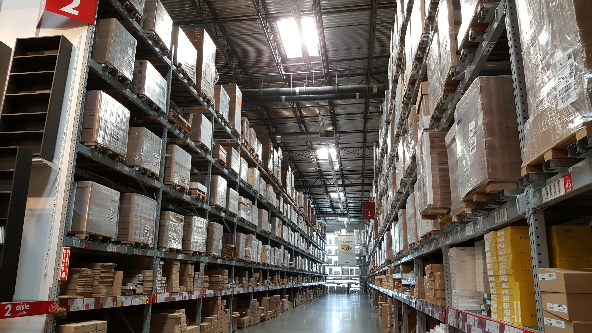

Commercial Services
Our commercial electrical services are tailored to meet the complex demands of various industries, ensuring that your business operations run smoothly and efficiently. We specialize in the design, installation, and maintenance of electrical systems for commercial properties such as offices, retail spaces, restaurants, and warehouses. Our team of licensed electricians is proficient in handling high-voltage systems, implementing energy-efficient lighting solutions, and integrating advanced wiring for data and communication networks. We prioritize safety and compliance, adhering to the latest industry standards and regulations to deliver reliable and effective electrical solutions.
Understanding the critical role that a dependable electrical infrastructure plays in your business, we offer prompt and professional services to minimize downtime and disruptions. Whether you're embarking on new construction, renovating existing spaces, or require immediate repairs, our expertise ensures that your electrical systems are optimized for performance and safety. From routine maintenance to complex installations, we are committed to supporting your business with comprehensive electrical services that meet your specific needs.